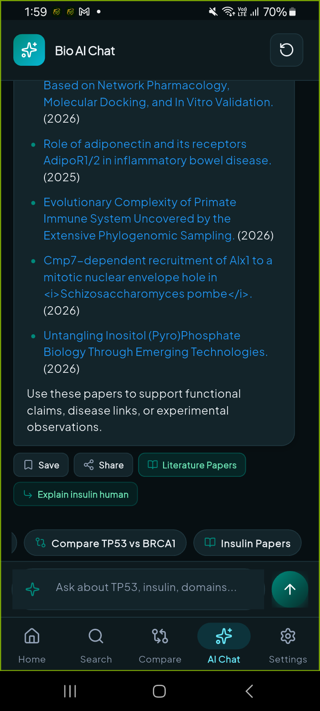
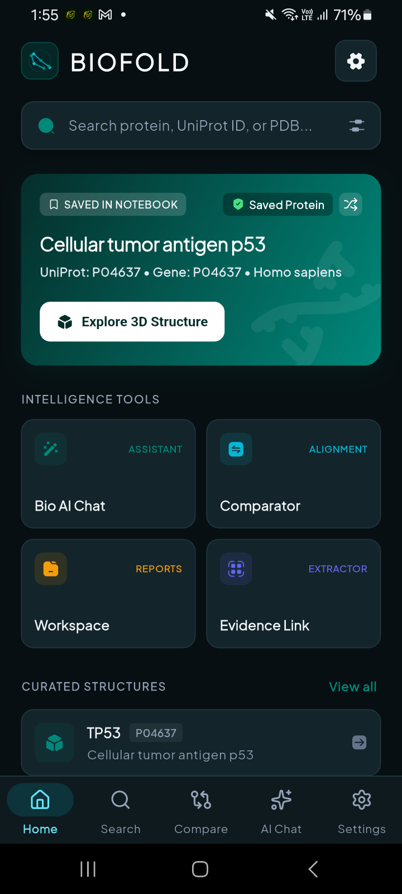
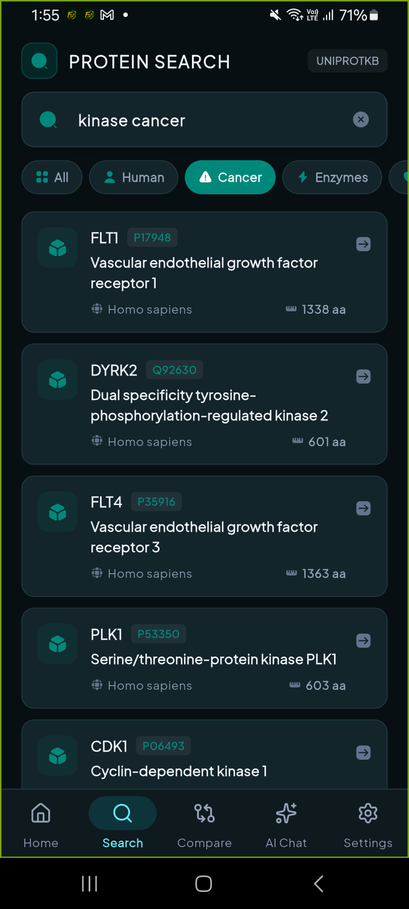

AlphaFold 3D Explorer
Molecular Structures
& Confidence Metrics.
Molecular Structures
& Confidence Metrics.
BioFold unifies AlphaFold 3D predictions, UniProtKB Swiss-Prot annotations, InterPro functional domains, and Europe PMC open literature into a high-performance, offline-ready research dossier platform designed for molecular biologists and bioinformaticians.



Engineered for Molecular Discovery
Six computational modules unifying structural biology, machine learning predictions, and lab evidence management.
AlphaFold 3D & Confidence
Hardware-accelerated WebGL viewer rendering atomic coordinates with 4-tier pLDDT color ramps (Dark Blue >90 to Orange <50 IDR regions).
Pairwise Protein Comparator
Side-by-side metric diffs: sequence length, mean pLDDT confidence variance, shared InterPro functional motifs, and literature citations.
Multi-Note Evidence Board
Attach multiple custom observations, mutation checkpoints, and literature tags per protein. Edit, update, and manage your ongoing lab notes effortlessly.
Publication-Ready PDF Export
Compile multi-page vector PDF dossiers complete with metadata sheets (Researcher, Lab, Project ID), structural metrics, and evidence tables.
Bio AI Research Assistant
AI-guided scientific exploration covering disease phenotypes, catalytic domains, structural reasoning, and Europe PMC literature queries.
Offline Local Hive Database
100% private and offline-first. All bookmarks, workspaces, custom notes, and educational guides persist locally without cloud dependencies.
In-Silico Biophysical Algorithms
Native mathematical engines executing directly on your phone's processor with 0 MB cloud latency and 100% offline data privacy.
Mutation Shockwave & Structural Breaker
Predicts the structural collapse and thermodynamic destabilization of single amino acid substitutions (missense mutations) using classical biophysical matrices.
- BLOSUM62 Evolutionary Matrix: Evolutionary substitution log-odds scores.
- 5 Biophysical Shifts: Volume (ų), Charge (e), Hydropathy index, and α-Helix / β-Sheet secondary structure propensities.
- Clinical Oncogenic Presets: Direct triage for TP53 R175H, KRAS G12D, BRAF V600E, EGFR L858R, and Sickle Cell HBB E6V.
Dynamic pH Titration & Net Charge Curve
Calculates the exact theoretical Isoelectric Point (pI) and plots the continuous net charge curve from pH 0.0 to 14.0 in real-time.
- EMBOSS Empirical Scale: Standard pKa values for free termini & side chains (Cys, Asp, Glu, His, Lys, Arg, Tyr).
- Interactive Drag-to-Scrub Curve: Inspect net charge under stomach acid (pH 1.5), blood (pH 7.4), or basic buffer (pH 11.0).
- Side-Chain Ion Inventory: Complete table breaking down positive, negative, and neutral amino acids.
Designed for Every Level of Research
From classroom learning to lab bench triage, BioFold serves academic and experimental bioscience workflows.
Bioscience Students
B.Sc/M.Sc Biotech, Biochemistry, and MBBS students mastering 3D folds, isoelectric points, and exam revision flashcards.
University Educators
Deliver dynamic 60 FPS molecular demonstrations and generate interactive protein quizzes for classroom lectures.
Wet-Lab Scientists
Quickly compute buffer pI and charge balances on the bench for chromatography and protein purification protocols.
Variant Analysts
Conduct in-silico triage on clinical missense mutations and analyze evolutionary conservation in conferences or meetings.
How to Use BioFold
Follow a cohesive step-by-step scientific exploration pipeline.
Search Target Protein
Type gene symbols or accession codes (e.g. TP53, Spike, Insulin, EGFR) to pull curated functional records instantly.
3D Structure & pLDDT Audit
Rotate the Mol* 3D WebGL molecule and evaluate per-residue confidence scores to verify structural integrity.
In-Silico Variant Testing
Open Mutation Shockwave to test amino acid substitutions against Grantham physical distance and BLOSUM62 matrices.
pH Titration & pI Curve
Slide across the pH continuum to inspect protein net charge and verify the exact theoretical isoelectric point.
Pairwise Homology Compare
Place two proteins side-by-side to compare sequence divergence, functional roles, and shared domain architectures.
Export PDF Research Dossier
Compile all notes, checklists, and observation tags into a structured, publication-ready research PDF report.
AlphaFold pLDDT Metric System
Standardized color scales and biological interpretation for predicted per-residue coordinates.
Very High Confidence
High-precision backbone and sidechain coordinates suitable for atomic-level drug design.
Confident Fold
Highly reliable secondary structure backbone topology with correct general fold conformation.
Low Confidence
Flexible loop or link regions; interpret general fold with caution and corroborate with experiments.
Very Low / IDR
Intrinsically Disordered Region lacking isolated stable 3D structure. Expected in regulatory tails.
Frequently Asked Questions
Everything you need to know about BioFold's scientific capabilities, target audience, and data privacy.
1. Who should use the BioFold mobile app?
BioFold is built for university students in biochemistry and biotechnology, academic researchers, bioinformaticians, structural biologists, and pharma scientists who require quick mobile access to AlphaFold 3D structures, UniProt functional data, and literature.
2. How does the AlphaFold 3D viewer & pLDDT confidence analysis work?
BioFold fetches predicted 3D atomic coordinates from the EMBL-EBI AlphaFold DB API. It renders coordinates with WebGL and visualizes per-residue pLDDT scores using standard 4-tier color gradients (>90 Very High, 70–90 Confident, 50–70 Low, <50 Disordered).
3. What is the Dual-Protein Pairwise Comparator?
The Comparator enables researchers to contrast any two proteins (such as TP53 vs p73) side-by-side. It computes sequence length delta, mean pLDDT confidence variances, shared InterPro functional domains, and cross-referenced PubMed literature.
4. Can I add multiple notes and mutation logs to a single protein?
Yes. In the Evidence Board workspace, you can attach multiple custom notes (Mutation checkpoints, Structure observations, Lab findings) to any protein, edit them anytime, and categorize them with custom priorities.
5. How do I generate publication-ready PDF dossiers?
Tap "Export PDF Report" inside your workspace. You can optionally attach Lead Researcher name, Lab/Institution, and Project ID to compile a high-resolution, multi-page vector PDF dossier containing all structural metrics and notes.
6. What scientific databases are integrated into BioFold?
BioFold unifies UniProtKB (Swiss-Prot/TrEMBL), DeepMind AlphaFold DB, RCSB Protein Data Bank (PDB), EMBL-EBI InterPro domain signatures (CDD, PFAM, PROSITE), and Europe PMC scientific literature.
7. Does BioFold work without an active internet connection?
Yes. All saved bookmarks, workspace evidence boards, custom notes, and educational guides are stored in local Hive NoSQL database and remain accessible offline.
8. How does the Bio AI Assistant support molecular research?
Bio AI answers questions regarding protein function, catalytic mechanisms, disease pathways, and AlphaFold confidence interpretation with pre-configured quick-prompt accelerators.
9. Is my research data and lab notes kept private?
Yes. All personal notes, workspace evidence, and bookmarks reside strictly on your local device. BioFold adheres to strict open-science privacy principles without sending private notes to cloud trackers.
10. How do I download or install the BioFold app?
BioFold is available on Google Play Store via package ID com.biofold.biofold_learn. You can also build it directly from source on GitHub.
Open Source & Extensible
BioFold is fully open-source under the MIT license. Clone the repository, configure your Flutter environment, and customize research modules or data connectors for your lab.
$ git clone https://github.com/coderbaba0/biofold.git
$ cd biofold
$ flutter pub get
$ flutter run
Have Questions or Feature Requests?
Reach out directly to the core development & research team for support, institutional partnerships, or data suggestions.